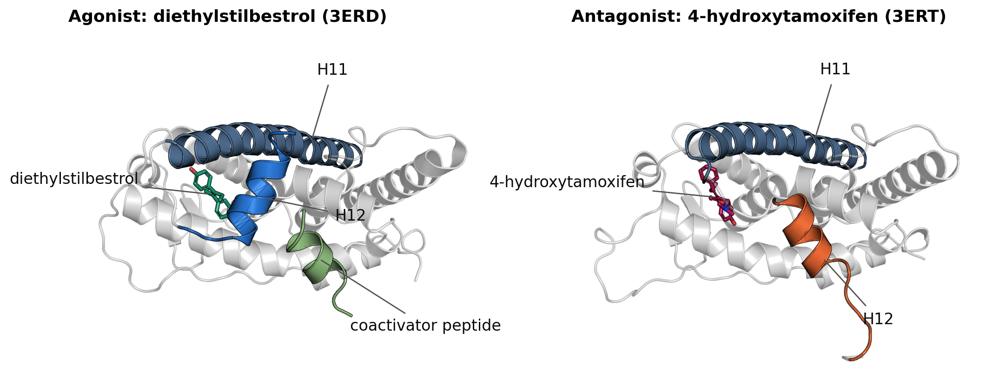
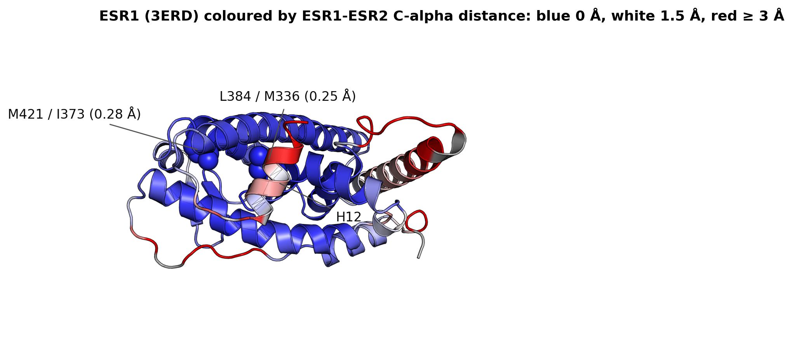

The PDB (queried in September 2026) holds 487 X-ray entries of oestrogen receptor α (ESR1, UniProt P03372). 444 contain an ESR1 chain (901 chain models); 788 chains from 351 entries pass our ligand-binding-domain screen and form the working set. 39 ESR2 entries (86 chains) serve as a comparison.
Caveats: action class is confounded with crystal context (constructs and coactivator peptides are chosen to suit the ligand); part of the labels come from assay thresholds; the comparison uses C-alpha atoms only, so side-chain differences are not measured.
All queries used the public RCSB PDB and ChEMBL services in September–November 2026; the results describe the archives on those dates.
data/ids/pdb_ids_esr1.txt, pdb_ids_esr2.txt).files.rcsb.org; file names, sizes and SHA-256 sums
in data/ids/download_manifest.csv and sha256sums.txt. The files themselves are not stored in
the repository; the deposited backbone atoms of the 788 chains are (data/coordinates/backbone.npz).data/structures/entries.csv,
chain_table.csv, additives_per_entry.csv).data/structures/attrition_funnel.csv, chain_status.csv records every excluded chain and why).
data/ligands/ligand_ids.csv,
affinity_per_ligand.csv, assay_spread.csv).data/ligands/action_class.csv, kept for history). November: hand labels from the primary article of
every entry, 377 rows, 368 real ligands: agonist 104, partial agonist 79, antagonist 119, unknown 64, mixed 2, with
evidence source, DOI and, where reported, efficacy and proliferation as % of E2
(data/ligands/esr1_dataset_final.csv and its dictionary).data/esr2/).Code: pipeline/01_structures.py … 11_esr2.py (structure analysis),
pipeline/curated_action/01–05 (action classes, chemistry, PyMOL), pipeline/figures/fig_*.py (one
script per figure). Software: Python 3.11, NumPy 2.3.5, pandas 3.0.6, SciPy 1.16.3, scikit-learn 1.7.2, umap-learn
0.5.12, Matplotlib 3.10.8, RDKit 2026.09.1, open-source PyMOL 3.2 (headless), python-pptx 1.0.2; gemmi, Biopython and
P2Rank were used upstream to build the frozen tables.
results/02_lid_groups/rmsd.npy), also without residues 528–550.Outputs: results/<stage>/ (tables and numbers.json), figures/ (PNG and
SVG), evidence/ (index of claims with their source tables and a script that re-checks them),
docs/ (reports, slides). A full run takes about four minutes, most of it the PyMOL ray tracing.
Files: rmsd_blocks, dendrogram
Methods. Panel A shows the 788 × 788 C-alpha RMSD matrix ordered by group (mean per block of up to 10 chains); panel B the average-linkage tree with the four cuts.
Results. Two blocks: median RMSD 0.67 Å inside cl7, 0.87 Å inside cl4 and 3.49 Å between them. The cuts give 16, 7, 4 and 3 clusters; at 1.5 Å the three largest clusters hold 99% of the chains. The cluster medoids are 5TM1 A (cl7) and 2QE4 B (cl4).
Discussion. The structural diversity of ESR1 is essentially two states; finer cuts split mostly by crystal form and construct, not by new conformations.
File: where_groups_differ

Methods. Distance between the cl7 and cl4 mean C-alpha positions at each residue after the core fit.
Results. Residues 528–550 (the H11–H12 loop and H12) carry 98.6% of the squared difference; without them the groups are 0.82 Å apart and merge at 1.5 Å. The switch sits at the H11–H12 hinge: residue 537 has ψ +157° in cl7 and −47° in cl4. Without any superposition, only distances to H12 change (8 of 36 helix-centre distances; H7–H12 +5.45 Å; all others ≤ 0.20 Å).
Discussion. The rest of the domain keeps its shape; the two groups are two positions of one helix, and the superposition-free checks rule out an alignment artefact.
File: lid_outliers

Methods. Distance from the H12 centre to the H11 axis for every chain with a helical H12 (748); Tukey fences and the ordinary-variation rule per group.
Results. Medians 12.5 Å (cl7) and 22.3 Å (cl4), no overlap; 15 chains lie beyond ordinary variation. The two furthest cl7 chains (5KCU B, 5KD9 B) carry antagonists of one series crystallised with Y537S and a coactivator peptide; five grey chains hold the lid between the positions. In 7 of 15 crystals with several copies the other copies are ordinary.
Discussion. Unusual lids are rare and mostly belong to one copy in its lattice position; the closed-lid antagonists are the clearest cases of crystal context overriding ligand class.
Files: curated_qc, crystal_components


Methods. Panel A: average linkage repeated on the RMSD matrix restricted to chains with R-free ≤ 0.30 (767) or passing all three limits (544). Panel B: entry-level effects of additives, recipe, solvent and lattice contacts on lid order and H12 mobility, divided by ordinary variation. Consensus outliers: chains flagged by at least three of five detectors.
Results. The clusters survive filtering (adjusted Rand index 0.998 and 0.982 at 1.5 Å; Hill q1 2.11 → 2.09 and 2.03). Of 22 consensus outliers, 16 have no quality problem and differ in peptide, construct, crystal form and pH. The 199 chains with mean B above 50 Ų are spread over both groups (139 cl7, 58 cl4). No additive or recipe effect reaches ordinary variation (0 of 22 tests); in cl4 the copy with more lattice contacts at the lid has more of the lid modelled (38 crystals against 14).
Discussion. The structure groups are biology plus crystal context, not crystallographic noise. Peptide, construct and crystal form are markers chosen by crystallographers to suit the complex; we report association, not cause.
Files: ligand_size, curated_steroid_class


Methods. RDKit descriptors of the crystallised ligands; ECFP4 and MACCS Tanimoto matrices; average-linkage and K-means clusters; Cramér's V with permutation tests; the steroid nucleus by substructure search.
Results. Ligands of cl4 are larger (median 34 against 24 heavy atoms) and carry a basic amine (74% against 1%). Chemical clusters go with action class (Cramér's V 0.62 on pairs, 0.51 with one pair per article) and with lid position (0.46). 204 close ligand pairs (Tanimoto ≥ 0.55) differ in class or position. The 18 steroidal ligands sit together in chemical space; 33 of their 42 complexes are agonists and 3 antagonists (Fisher p = 7×10⁻⁷ against other ligands).
Discussion. Chemistry predicts function well, but a steroid scaffold does not make an antagonist: the three steroidal antagonists carry the long side chain typical of antagonists.
Files: curated_class_h12, curated_h12_within


Methods. 291 entry × ligand pairs with an agonist, partial agonist or antagonist label and a single ligand. Panel B compares classes inside cl7 with the Y537S construct and a peptide, and inside cl4 with L536S constructs and no peptide; 95% intervals from a bootstrap over articles.
Results. Agonists 95/98 in cl7; partial agonists 65 cl7 and 13 cl4; antagonists 88 cl4 and 22 cl7 (20 of them Y537S, 21 with a peptide). Inside cl7, antagonists sit +0.21 Å (−0.11 to 0.30) and partial agonists −0.17 Å (−0.29 to −0.02) from agonists; inside cl4 antagonists and partial agonists differ by −0.02 Å. The estimates hold across 11 filters and leave-one-article-out checks.
Discussion. The class acts as a switch between two lid positions and leaves no trace within a position beyond crystal-copy noise. Partial agonists behave structurally like agonists in most crystals.
Files: pymol_agonist_antagonist, pymol_h12_blocked (script pipeline/curated_action/05_pymol_agonist_antagonist.py)


Methods. 3ERD (diethylstilbestrol, GRIP1 peptide) and 3ERT (4-hydroxytamoxifen), both wild type, superposed on the core C-alpha atoms with outlier rejection (0.27 Å over 102 atoms); the same camera for both; closest approach of the 3ERT ligand to the H12 of 3ERD.
Results. The H12 centre moves 13 Å; the antagonist side chain comes within 1.2 Å of Leu540 of the closed H12, with 6 atoms within 3 Å.
Discussion. The closed position is sterically blocked by the antagonist's side chain, which is why H12 relocates to the groove and coactivators cannot bind.
Files: set_cover, curated_redundancy


Methods. Greedy set cover of all chains by representatives with a complete H12; clusters found as entries are added in random order (200 orders); Hill numbers with entries weighted equally.
Results. Two representatives cover 90% of the chains within 1.0 Å, 48 within 0.5 Å. Effective conformations: 2.11 for all entries, 1.17 for agonists, 1.57 for partial agonists and 1.86 for antagonists. Copies in one crystal differ by a median 0.53 Å, and a chain released since 2010 lies a median 0.35 Å from its nearest earlier chain.
Discussion. Most new structures repeat a known state; new conformational information comes from new contexts (constructs without a peptide, intermediate lids), not from more ligands of a known class.
Files: esr2_map, esr2_displacement, pymol_esr2_displacement



Methods. Joint RMSD matrix of 788 ESR1 and 86 ESR2 chains in one frame (classical MDS); median C-alpha distance per position over 135 matched ESR1/ESR2 pairs with the same ligand after a core fit, also painted on 3ERD in PyMOL (blue 0 Å, white 1.5 Å, red ≥ 3 Å; selectivity positions as spheres).
Results. The main ESR2 group (68 chains, 93% with a peptide) lies 1.33 Å from ESR1 cl7, the second (12 chains, none with a peptide) 2.31 Å from cl4. Matched backbones agree to a median 0.53 Å; the selectivity positions L384/M336 and M421/I373 move 0.25 and 0.28 Å.
Discussion. The two H12 states are conserved between the receptors. Pocket selectivity comes from side-chain identity rather than backbone shifts. With 86 chains and 12 in the second group, ESR2 statements are descriptive.
File: curated_pocket

Methods. Pocket volume as a percentage of the E2 pocket and filling (ligand volume over pocket volume) for fully modelled ligands; Kruskal–Wallis across classes inside each group.
Results. P2Rank ranks the ligand pocket first in all 788 chains. Filling does not differ between cl7 and cl4 (entry level q = 0.14). Inside cl7 the pocket grows from agonist to antagonist (75%, 85%, 91%; p = 0.0008) while filling stays about one third.
Discussion. Larger ligands open a larger pocket rather than packing it more tightly.
Limitations.
Recommended next steps, in order.
| Deliverable (project description §10) | Status | Where |
|---|---|---|
| Curated ESR1 + ESR2 dataset with QC flags, ligand classes, SMILES | Done | data/structures/chain_table.csv, data/ligands/esr1_dataset_final.csv, ligand_ids.csv; mmCIF listed with checksums, not stored |
| RMSD matrix saved to disk | Done | results/02_lid_groups/rmsd.npy |
| Clusters at several cuts, dendrogram, landscape, medoids, QC-conditioned version | Done | Figures 1, 4; groups.csv, cluster_medoids_1p5.csv, qc_clustering_sensitivity.csv |
| Cumulative diversity, Shannon entropy, by ligand class | Done | Figure 8; redundancy_*.csv |
| Tanimoto matrices, UMAP, K-means (K = 3–7) | Done | tanimoto_ecfp4.npy, tanimoto_maccs.npy, chem_kmeans_scan.csv, figure curated_steroid_map |
| Chemistry–structure linkage, tests, disagreement cases | Done | Figure 5; chem_struct_class_associations.csv, chem_discordant_pairs.csv |
| Minimal representative set (≥ 90%) | Done | Figure 8; greedy_set_cover_*.csv |
| Per-residue ESR1/ESR2 displacement with selectivity residues, heatmap + PyMOL | Done | Figure 9; data/esr2/esr1_esr2_displacement_profile.csv, figure pymol_esr2_displacement |
| ESR2 conformational landscape | Done, small-n | Figure 9; results/11_esr2/ |
| P2Rank pocket analysis by ligand class | Done | Figure 10; pocket_by_class.csv |
| ChEMBL bioactivity mapping | Done | assay_spread figure; affinity_per_ligand.csv |
| QC questions of §4.2 (outlier quality, high-B grouping, entropy without R-free > 0.30) | Answered | Figure 4 text |
| Scripted PyMOL figures | Done | Figure 7 |
| Public repository, README, reproducible | Done | README.md, reproduce.sh |
| Manuscript draft | In progress | This document and the monthly reports |
| All-atom RMSD | Not done | C-alpha only, see limitations |
Environment.
python3.11 -m venv .venv && .venv/bin/pip install -r requirements.txt
Run order.
| File | Role |
|---|---|
pipeline/01_structures.py … 11_esr2.py | Counts, superposition and groups, lid outliers, consensus outliers, maps, hidden lid, geometry without superposition, crystal environment, ligands and pockets, redundancy, ESR2 |
pipeline/curated_action/01–04 | Join of the hand labels, redundancy and QC by class, chemistry (steroids, UMAP, K-means), class effects and pockets |
pipeline/curated_action/05_pymol_agonist_antagonist.py | PyMOL views (downloads 3ERD and 3ERT if not cached) |
pipeline/figures/fig_*.py | One figure each, PNG and SVG in figures/ |
docs/slides_action_class.py, docs/recent_results.py | Slide decks |
evidence/rebuild.py | Re-checks every number in evidence/INDEX.md |
docs/build_docs.py | This document and the monthly report (HTML → PDF with Chrome) |
PYTHON=.venv/bin/python bash reproduce.sh runs everything above except the documents and ends with "all
numbers match"; .venv/bin/python docs/build_docs.py prints the documents.
Determinism. Every random step uses seed 42; the same inputs give the same tables and figures.
Figure files. Figure 1 = rmsd_blocks, dendrogram; Figure 2 = where_groups_differ; Figure 3 = lid_outliers; Figure 4 = curated_qc, crystal_components; Figure 5 = ligand_size, curated_steroid_class; Figure 6 = curated_class_h12, curated_h12_within; Figure 7 = pymol_agonist_antagonist, pymol_h12_blocked; Figure 8 = set_cover, curated_redundancy; Figure 9 = esr2_map, esr2_displacement, pymol_esr2_displacement; Figure 10 = curated_pocket.